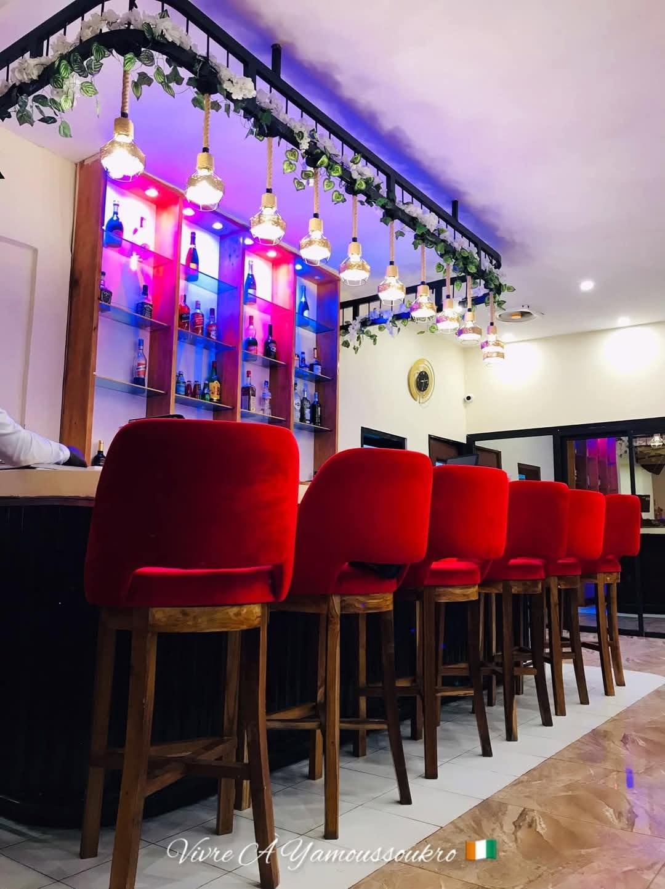

Notre Histoire
Plus qu'un restaurant, une aventure culinaire.
Les Racines du Bélier d'Or
Né au cœur de Yamoussoukro, le Bélier d'Or est le fruit d'une passion inébranlable pour les richesses gastronomiques de notre terroir. Nous avons voulu créer un espace où la tradition rencontre la modernité.
Chaque plat que nous servons raconte une histoire, celle de nos mères et de nos grands-mères, sublimée par des techniques de cuisine contemporaines et une présentation soignée.
.jpg)
Une Cuisine Africaine Moderne
Notre concept est simple : sourcer les meilleurs ingrédients locaux et les élever au rang de haute gastronomie, sans jamais perdre l'authenticité de leur goût originel.
Que ce soit notre attiéké finement roulé, notre sauce graine onctueuse ou notre poisson braisé aux épices secrètes, nous mettons un point d'honneur à offrir une expérience "Premium" à nos convives.

L'Âme de notre Cuisine
L'artisan derrière vos plus beaux souvenirs gustatifs.
Chef Amadou Koffi
Chef Exécutif & Fondateur
"Ma philosophie est de traiter nos produits locaux avec le respect et le prestige qu'ils méritent. La cuisine africaine est riche, complexe et merveilleusement chaleureuse. Mon but est de vous la faire découvrir sous son meilleur jour, à chaque bouchée."